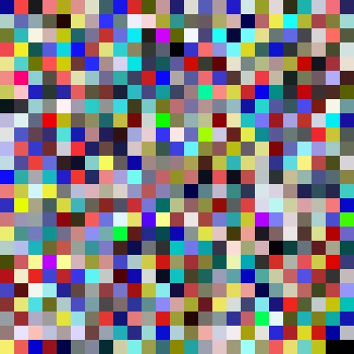
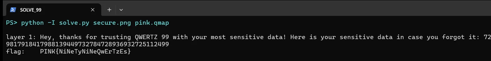

01Start point: the hint hex
- What I found: the first byte 0x97 XOR 0xFF is 0x68, which is "h". Flipping every bit (bitwise NOT) of every byte gives https://github.com/QWERTZexe/QWERTZ-99.
- Thinking: a URL that starts with "http" has a recognisable first byte. 0x97 is exactly the inverse of "h", so the whole string is just NOT-ed.
02Pivot: reading the QWERTZ-99 source
- What I found, the .qmap format: [QMAP]{c:3}{s:1}(ord|code)... Every character (stored as its ord) maps to a 3-digit code. c:3 is the code width and s:1 means "98 mode" is supported.
- What I found, encoding ("99"): concatenate each character's code, then append "99" as a terminator.
- What I found, salting ("98"): drop the "99" and multiply the number by a password number P = int(concatenated password codes) * (product of every password code). Then append "-98".
- What I found, the image: one symbol per pixel (0-9, or 11 for "-"). Each pixel holds two masked copies of the symbol, (num+m1, m1) and (m2, num+m2), and which RGBA channel goes first rotates with the pixel index (idx % 4). Decoding means taking the two differences and keeping the pixel only when both agree.
- Thinking: this is security through obscurity. The masks are stored right next to the data they hide, so the image is an encoding, not encryption.
03Pivot: decoding the image
- What I did: reimplemented the pixel decoder in Python.
- Result: a 620-digit number ending in "-98", so the message was salted with an unknown password: N = M * P.

04Pivot: recovering the password without a wordlist
- Dead end: I tried common words (pink, qwertz, secure, 99...) and every printable password up to 3 characters. Nothing divided N exactly.
- Thinking: P is a product of the password's own codes, so its small prime factors have to appear in N. I factored N by trial division up to 100,000.
- What I found: N = 2^6 * 3^14 * 5 * 73 * 137 * 163^4 * 691^2 * 4241 * (589-digit cofactor).
- What I found: reading it against pink.qmap, "1" = 486 = 2*3^5, "3" = 978 = 2*3*163, "7" = 691. The password "13371337" has a code product of 2^6 * 3^14 * 163^4 * 691^2, which matches the exponents exactly. Its concatenated part 486978978691486978978691 = 486978978691 * (10^12 + 1), and 10^12 + 1 = 73 * 137 * 99990001. That explains the 73 and 137 as well.
- Result: N mod P = 0 for "13371337", and N / P decodes with no unknown codes: "Hey, thanks for trusting QWERTZ 99 with your most sensitive data! Here is your sensitive data in case you forgot it: 72756517940796217918417988128949817918417988139449732784728936932725112499"
05Pivot: the second layer
- What I did: the trailing digit string ends in "99", so it is another QWERTZ-99 string. I decoded it with the same pink.qmap.
- Thinking: the message said "your sensitive data", so the digits after the colon had to be the real payload, still encoded.
- Result: PINK{NiNeTyNiNeQwErTzEs}. My solve.py run printed both layers and the flag.
